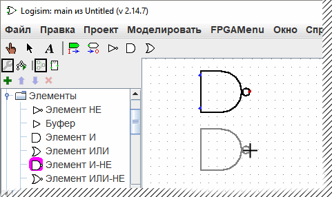

Панель проводника
Logisim организует инструменты в библиотеки. Они отображаются в виде папок в панели проводника; для доступа к компонентам библиотеки вам нужно дважды щёлкнуть соответствующую папку. Ниже я открыл библиотеку Элементы и выбрал инструмент И-НЕ из неё. Вы видите, что Logisim теперь готов добавить элемент И-НЕ в схему.

Если вы просмотрите варианты в библиотеке Элементы, вы заметите, что у нас не было необходимости разрабатывать схему Исключающее ИЛИ ранее: она встроена в Logisim.
При создании проекта он автоматически включает в себя несколько библиотек:
- Проводка: компоненты, которые взаимодействуют непосредственно с проводами.
- Элементы: компоненты, которые выполняют простые логические функции.
- Плексоры: более сложные комбинационные компоненты, такие как мультиплексоры и декодеры.
- Арифметика: компоненты, выполняющие арифметические действия.
- Память: компоненты, хранящие данные, такие как триггеры, регистры, и ОЗУ.
- Ввод/вывод: компоненты для взаимодействия с пользователем.
- Базовые: инструменты, которые являются неотъемлемой частью использования Logisim, хотя вы, вероятно, не будете заглядывать в эту библиотеку очень часто.
Logisim также позволяет вам добавлять другие библиотеки с помощью подменю Загрузить библиотеку в меню Проект. Вы видите, что Logisim имеет три категории библиотек.
- Встроенные библиотеки - библиотеки, распространяющиеся с Logisim. Они описаны в Справке по библиотеке.
- Библиотеки Logisim - проекты, построенные в Logisim и сохранённые на диск как проект Logisim. Вы можете разработать набор схем в одном проекте (как описано в разделе Подсхемы данного руководства), а затем использовать этот набор схем в виде библиотеки для других проектов.
- Библиотеки JAR - библиотеки, разработанные в Java, но не распространяемые вместе с Logisim. Вы можете скачать JAR библиотеки, написанные другими людьми, или же вы можете написать свои собственные, как описано в разделе Библиотеки JAR этого руководства. Разработка JAR библиотеки гораздо сложнее, чем разработка библиотеки Logisim, но компоненты могут быть гораздо более необычными, в том числе в плане атрибутов и взаимодействия с пользователем. Встроенные библиотеки (кроме библиотеки Базовые) были написаны с использованием того же API, что могут использовать библиотеки JAR, так что они удачно демонстрируют набор функциональных возможностей, которые JAR библиотеки могут поддерживать.
Некоторые JAR библиотеки распространяются без какой-либо информации о том, с какого класса Java начинать. При загрузке таких JAR, Logisim предложит вам ввести имя класса. Это имя класса должно быть предоставлено тем, кто распространяет этот JAR файл.
Чтобы удалить библиотеку, выберите Выгрузить библиотеки... из меню Проект. Logisim предостережёт вас от выгрузки библиотек, которые содержат компоненты, используемые в схеме, присутствующие в панели инструментов, или привязанные к кнопке мыши.
Кстати, технически библиотека содержит инструменты, а не компоненты. Так, в библиотеке Базовые вы найдете Инструмент Нажатие ( ), Инструмент Правка(
), Инструмент Правка( ), и другие инструменты, которые не связаны напрямую с конкретными компонентами. Большинство библиотек, однако, содержат лишь инструменты для добавления отдельных компонентов; все встроенные библиотеки, кроме библиотеки Базовые - как раз такие.
), и другие инструменты, которые не связаны напрямую с конкретными компонентами. Большинство библиотек, однако, содержат лишь инструменты для добавления отдельных компонентов; все встроенные библиотеки, кроме библиотеки Базовые - как раз такие.
Далее: Таблица атрибутов.